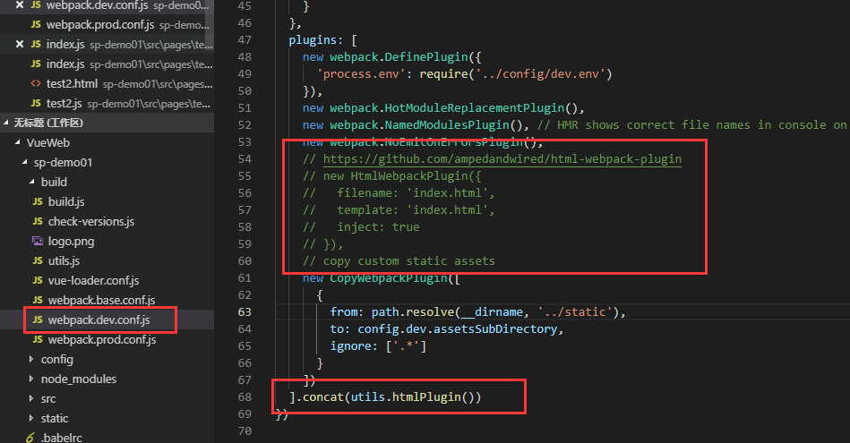

原文出处:本文由博客园博主吃西瓜的星星提供。
原文连接:https://www.cnblogs.com/zhuxiaoxiao/p/10751381.html
原文连接:https://www.cnblogs.com/zhuxiaoxiao/p/10751381.html
介绍
根据需求，我们希望建立一个多页面的vue.js项目，如何改造单页面vue.js项目为多页面项目？跟着我的步伐看下去吧.
1.创建单页面vue.js项目
简单的记录一下创建步骤：
--安装cnpm
npm install -g cnpm --registry=https://registry.npm.taobao.org
--安装vue-cli
npm install -g vue-cli
--安装webpack并新增目录
vue init webpack sp-demo01
--进入项目目录
cd sp-demo01
--更新
npm install
--运行
npm run dev
--构建
npm run build
2.配置路由映射
在utils.js文件末尾添加如下代码，用于自动建立路由映射，如下图：
// glob是webpack安装时依赖的一个第三方模块，还模块允许你使用 *等符号, 例如lib/*.js就是获取lib文件夹下的所有js后缀名的文件
var glob = require('glob')
// 页面模板
var HtmlWebpackPlugin = require('html-webpack-plugin')
// 取得相应的页面路径，因为之前的配置，所以是src文件夹下的pages文件夹
var PAGE_PATH = path.resolve(__dirname, '../src/pages')
// 用于做相应的merge处理
var merge = require('webpack-merge')
// 多入口配置
// 通过glob模块读取pages文件夹下的所有对应文件夹下的js后缀文件，如果该文件存在
// 那么就作为入口处理
exports.entries = function () {
let startPath = 'src/pages/'
// 应该读取js文件，但是这里限定js与html文件名一致，所以读取html文件
var entryFiles = glob.sync(PAGE_PATH + '/**/*.html')
var map = {}
entryFiles.forEach((filePath) => {
var dirPath = filePath.substring(0, filePath.lastIndexOf('/'))
var dirName = dirPath.substring(dirPath.lastIndexOf('/') + 1)
var filename = filePath.substring(filePath.lastIndexOf(startPath) + startPath.length, filePath.lastIndexOf('/'))
if (filename.endsWith(dirName)) {
map[filename] = filePath.substring(0, filePath.lastIndexOf('.html')) + '.js'
}
})
console.log(map)
return map
}
修改webpack.base.conf.js文件内容，在启动时调用映射方法，如下图：
3.配置页面映射
在utils.js文件末尾添加如下代码，用于自动建立页面映射，如下图：
// 多页面输出配置
// 与上面的多页面入口配置相同，读取pages文件夹下的对应的html后缀文件，然后放入数组中
exports.htmlPlugin = function () {
let entryHtml = glob.sync(PAGE_PATH + '/**/*.html')
let startPath = 'src/pages/'
let arr = []
entryHtml.forEach((filePath) => {
let filename = filePath.substring(filePath.lastIndexOf(startPath) + startPath.length, filePath.lastIndexOf('/'))
let conf = {
// 模板来源
template: filePath,
// 文件名称
filename: filename + '.html',
// 页面模板需要加对应的js脚本，如果不加这行则每个页面都会引入所有的js脚本
chunks: ['manifest', 'vendor', filename],
inject: true
}
if (process.env.NODE_ENV === 'production') {
conf = merge(conf, {
minify: {
removeComments: true,
collapseWhitespace: true,
removeAttributeQuotes: true
},
chunksSortMode: 'dependency'
})
}
arr.push(new HtmlWebpackPlugin(conf))
})
console.log(arr)
return arr
}
在启动时调用页面映射方法，如下图：


4.注意
1.由于代码中的限制，如下图所示，test2.html与test2.js名称一致，test3.html与test3.js名称一致，所以每个页面的js与html文件必须一致。
2.由于代码中的限制，如下图所示，所有页面必须在src/pages目录下。
3.以上2个问题可自行修改步骤2与3中的代码进行自定义。
5.完整结构，如下图：
6.test3页面
7.Test3与Test1运行效果